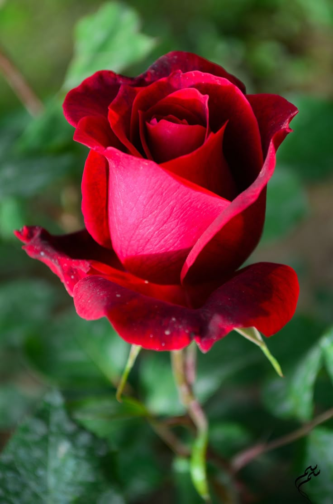

Introduction
Rose is one of the most popular and widely cultivated flowering plants in the world. Known for its beauty and fragrance, it belongs to the Rosaceae family and is native to regions of Asia, Europe, and North America.
Botanical Description
- Scientific Name: Rosa spp.
- Family: Rosaceae
- Type: Shrub or climbing plant
- Leaves: Pinnate, dark green with serrated edges
- Flowers: Large, layered petals, available in various colors
- Fruits: Small red berries called rose hips
Uses
- Ornamental: Gardens, bouquets, and landscapes
- Perfume & Cosmetics: Rose oil and rose water for fragrance and skincare
- Medicinal: Treats skin problems, stress, and digestive issues
- Culinary: Rose petals are used in teas, jams, and desserts
- Cultural: Symbol of love, beauty, and celebration worldwide
Interesting Facts
- There are over 300 species of roses and thousands of hybrids.
- Rose is often called the "Queen of Flowers."
- Rose petals are edible and used in food and drinks.